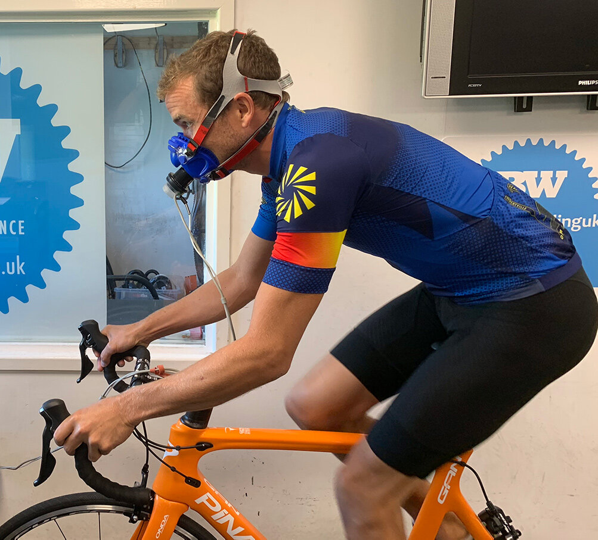
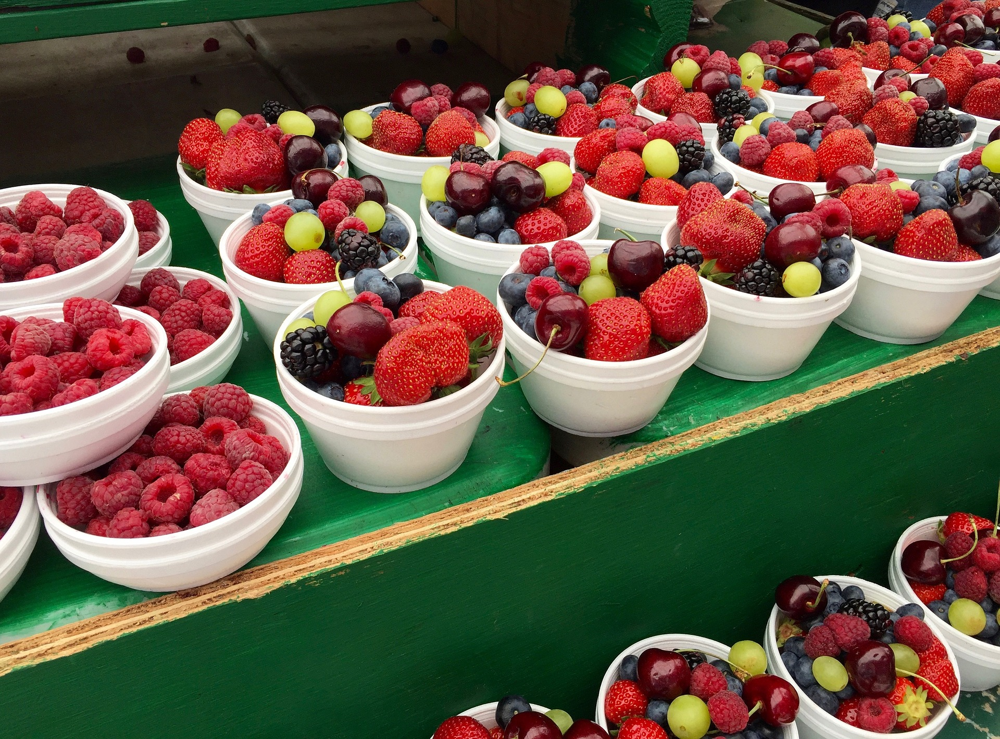
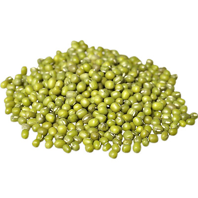

Short PowerPoint presentation, where I explain some concepts of sport nutrition to my staff. Some products of Daylesford Farm shop are mentioned.
The goal of this presentation is to give some basic concepts to increase the customer service of the staff and consequently to rise the selling.

Second PowerPoint presentation, where I explain some concepts of sport nutrition to my staff. Some products of Daylesford Farm shop are mentioned.
The goal of this presentation is to give some basic concepts to increase the customer service of the staff and consequently to rise the selling..
The aim of the study was to see the effect of energy substrate switching from glucose to galactose, on the vitro model of intestinal barrier:
Human Colorectal Tumour Cells (Caco2 cell lines). The switching to galactose increased the aerobic metabolism of Caco2
(instead of anaerobic metabolism ,typical of tumour cell) which has more similarities with the metabolism if intestinal barrier.
One of the results of this project is published in the following article:
JanssenDuijghuijsen, L. M., Grefte,(2017). Mitochondrial ATP depletion disrupts Caco-2 monolayer integrity and internalizes claudin 7. Frontiers in Physiology, 8, 794.

Development of physical test protocols for athletes for the department of Human Nutrition and Health at Wageningen University.
In particular the validity, the reliability and sensibility of these tests were studied. The protocol includes: strength tests (One repetition max) and aerobic capacity tests (constant duration test and time trials).
Moreover in this experience I could practice with body measures (skin fold), sport performance test and working in a group with other students.

Consultancy project titled” How do polyphenols lower the Glycaemic Index of foods?” commissioned by Royal Cosun cooperative.
During this experience, I increase my knowledge about polyphenols in particular about the mechanism of lowering the Glycaemic Index and eventual other beneficial effects for human health.

Case of study with the main objective is to assess the effect of an iron-rich meal combined with different doses of
vitamin C on the iron status of primary school children between the age of 6 and 12 years old.
The main hypothesis of this study is that eating guava, which is rich in vitamin C, in combination with
mungbean, which is rich in iron, will improve the iron status of the children.